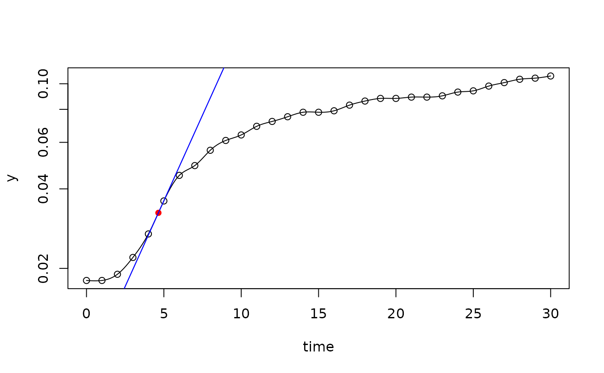
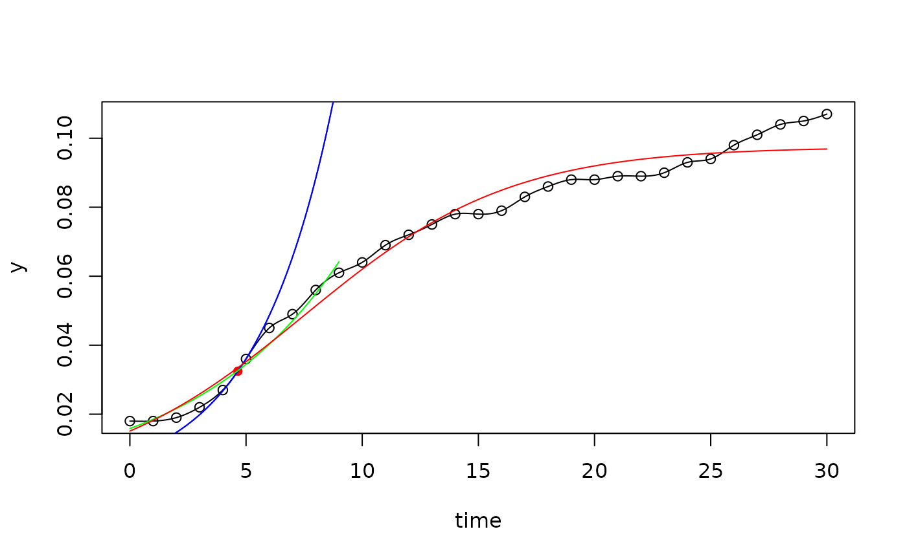

A collection of methods to determine growth rates from experimental data, in particular from batch experiments and plate reader trials.
The package contains basically three methods:
fit a linear regression to a subset of data with the steepest log-linear increase (a method, similar to Hall et al., 2013),
fit parametric nonlinear models to the complete data set, where the model functions can be given either in closed form or as numerically solved (system of) differential equation(s),
use maximum of the 1st derivative of a smoothing spline with log-transformed y-values (similar to Kahm et al., 2010).
The package can fit data sets of single experiments or complete series containing multiple data sets. Included are functions for extracting estimates and for plotting. The package supports growth models given as numerically solved differential equations. Multi-core computation is used to speed up fitting of parametric models.
References
Hall, B. G., Acar, H. and Barlow, M. 2013. Growth Rates Made Easy. Mol. Biol. Evol. 31, 232-238, doi:10.1093/molbev/mst197
Kahm, M., Hasenbrink, G., Lichtenberg-Frate, H., Ludwig, J., Kschischo, M. 2010. grofit: Fitting Biological Growth Curves with R. Journal of Statistical Software, 33(7), 1-21, doi:10.18637/jss.v033.i07
Soetaert, K. and Petzoldt, T. 2010. Inverse Modelling, Sensitivity and Monte Carlo Analysis in R Using Package FME. Journal of Statistical Software, 33(3), 1-28, doi:10.18637/jss.v033.i03
Soetaert, K., Petzoldt, T. Setzer, R. W. 2010. Solving Differential Equations in R: Package deSolve. Journal of Statistical Software, 33(9), 1-25, doi:10.18637/jss.v033.i09
Examples
data(bactgrowth)
splitted.data <- multisplit(bactgrowth, c("strain", "conc", "replicate"))
## get table from single experiment
dat <- splitted.data[["D:0:1"]]
fit1 <- fit_spline(dat$time, dat$value)
plot(fit1, log="y")

plot(fit1)
## derive start parameters from spline fit
p <- coef(fit1)
## subset of first 10 data
first10 <- dat[1:10, ]
fit2 <- fit_growthmodel(grow_exponential, p=p, time=first10$time, y=first10$value)
## use parameters from spline fit and take K from the data maximum
p <- c(coef(fit1), K = max(dat$value))
fit3 <- fit_growthmodel(grow_logistic, p=p, time=dat$time, y=dat$value, transform="log")
plot(fit1)
lines(fit2, col="green")
lines(fit3, col="red")
